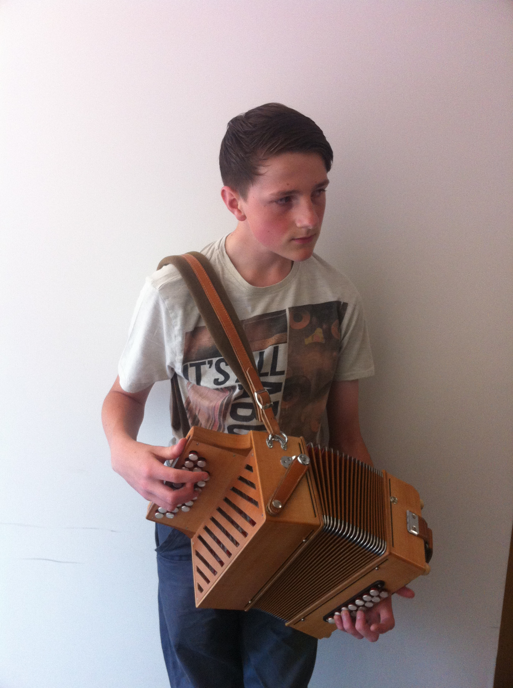
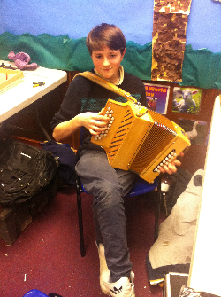

live
Bertie can often be found playing in local venues, festivals and open mic nights.
If you would like to know more please get in touch.
Future dates will be posted here soon!
- 
- 

At the age of 4 years Bertie began dancing with Holt Morris. This early love of traditional music led to the desire to play an instrument himself. At the age of 6 he borrowed a melodeon and begun to learn from a fellow morris man. At 8 he wished for an instrument to call his own and busked at The Trowbridge Villiage Pump Festival, earning enough over three days to buy his very first Hohner Erica.
Whilst busking at the pump festival Bertie was approached by Tim Van Eyken and proceeded to be taught by him for the next year. Since then, Bertie has attended numerous workshops hosted by Andy Cutting, Jamie Huddlestone, Luke Daniels and Karen Tweed and has been taught since the age of 14 by Ruth Behan.
In April 2013 Bertie attended a melodeon building workshop led by Emmanual Pariselle to create a melodeon with a unique C#/G/Reversals layout. This has rapidly become his favourite instrument, allowing a diverse range not offered by his others. He is currently awaiting a custom D/G/acc. 18 bass Castagnari.
In addition to years of performance with Holt Morris, Bertie has played with bands Spill the Whisky, The Merv Grist Players and alongside guitarist Tim Webb - as well as solo performances at the The Bath Folk Festival and The Holt Music Festival.
Bertie can often be found playing in local venues, festivals and open mic nights.
If you would like to know more please get in touch.
Future dates will be posted here soon!